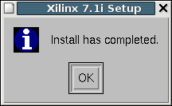
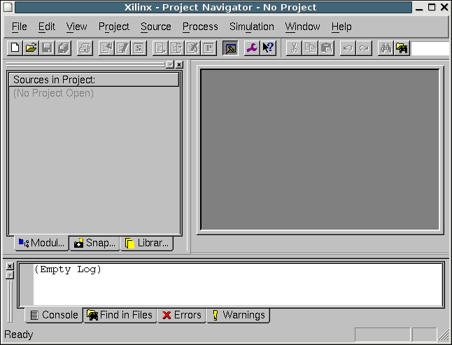
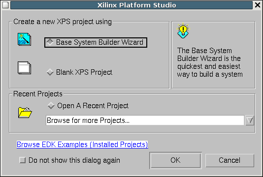
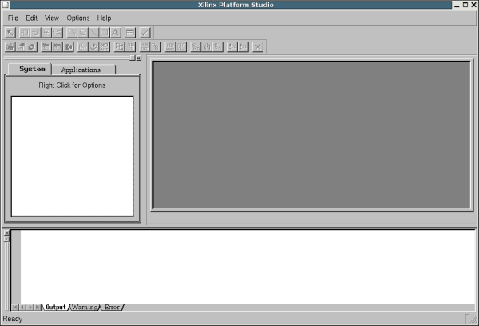

|
Cuaderno técnico 8: (Tutorial) Instalación de ISE 7.1 y EDK 7.1 en una máquina GNU/Linux con Debian/Sarge |
Sacar el CD 2 y montar el CD 3. Montarlo como root, igual que se hizo con los Cds 1 y 2, para asegurarse que se tienen permisos de ejecución. Entrar en el CD y ejecutar el setup:
|
montu:/# cd /cdrom montu:/cdrom# ./setup Select the installation type: 1) 32-bit 2) 64-bit |
El resto de la instalación es exactamente igual que en el caso del CD 2. Seleccionar las opciones que se quieren instalar.
Una vez terminada la instalación aparecerá:
|
 |
Ya tenemos el ISE 7.1 instalado. Vamos a ejecutarlo como usuario. Primero hay que establecer algunas variables de entorno.Abrimos un terminal y ejecutamos lo siguiente:
|
juan@montu:~$ export DISPLAY=:0 juan@montu:~$ . /usr/local/Xilinx/settings.sh [Atención al espacio entre el . y la primer /] juan@montu:~$ ise |
En mi ordenador, como lo tengo configurado en español, aparecerá el siguiente mensaje en la consola:
|
WARNING: es_ES:en_GB:en is not supported as a language. Using usenglish. |
Y justo después otro mensaje que no entiendo lo que significa :-( , pero que no parece importante:
|
OLE API Function OleInitialize is not currently implemented. Further warnings will be suppressed |
y aparece la ventana del “Tip of the Day” delante de la del Project Navigator.
|
 |
Para ejecutarlo otras veces lo mejor es crearse un script. Yo utilizo el siguiente (lo llamo start_ise):
|
#! /bin/bash . /usr/local/Xilinx/settings.sh export DISPLAY=:0 ise |
Para arrancar el ise sólo tengo que ejecutar este script:
|
juan@montu:~$ ./start_ise |
Los requisitos para la instalación de EDK 7.1 son exactamente iguales que el ISE 7.1. Si se ha instalado ISE correctamente, no se tendrán problemas con el EDK.
Yo lo he instalado como root (igual que ISE) y he especificado el directorio /usr/local/EDK. Una vez finalizada la instalación, para ejecutarlo como usuario normal hay que hacer lo siguiente:
|
juan@montu:~$ export DISPLAY=:0 juan@montu:~$ . /usr/local/Xilinx/settings.sh [Atención al espacio entre el . y la primer /] juan@montu:~$ . /usr/local/EDK/settings.sh [Atención al espacio entre el . y la primer /] juan@montu:~$ xps |
Salen los mismos mensajes de error que con el ISE, y al cabo de unos segundos arranca (en este ordenador tarda unos 7 u 8 segundos, va lento).
|
WARNING: es_ES:en_GB:en is not supported as a language. Using usenglish. OLE API Function OleInitialize is not currently implemented. Further warnings will be suppressed |
Aparece la ventana del EDK y un asistente para la creación de proyectos:
|
 |
Si se le da a Cancel se puede ver la ventana principal del EDK:
|
 |
Esta instalación se ha probado en las siguientes máquinas:
Ordenador de mesa Dell Optiplex G280, con una Debian/Sarge
Ordenador portátil Airis con una Knopix 3.7 (Instalación por defecto)
La instalación completa del ISE y del EDK ocupa mucho espacio de disco, del orden de 2.3GB. Hay que asegurarse que se tiene suficiente espacio en disco. En una de las instalaciones de prueba no teníamos suficiente espacio y el instalador simplemente se abortaba (segmentation fault) pero sin indicar en ningún momento la causa. Cuando dejamos más espacio libre, la instalación se realizó sin problemas.
No hemos conseguido cargar los drivers de los cables, por lo que no hemos podido usar el IMPACT desde Linux y descargar ficheros .bit en las FPGAs.
Estas herramientas todavía no son muy usables en linux. Van muy lentas. Pero al menos funcionan.
Este documento se distribuyen bajo licencia FDL por lo que se permite su copia, modificación y distribución, siempre y cuando se mantenga esta nota.
23/Junio/2005: Publicado enlace en esta web
Página 3 de 3
|
|